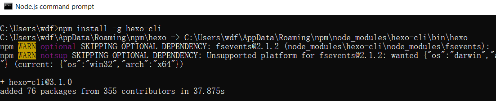
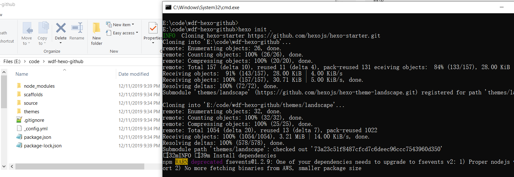
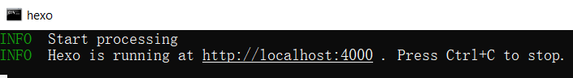
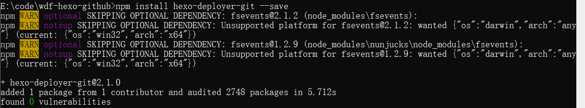

使用github配置个人博客
安装node.js
Hexo基于Node.js，所以您还需要安装Node.js。Node.js的官网下载地址： nodejs.cn/download/
使用 npm 安装 Hexo(演示是在windows-64环境下)：
npm install -g hexo-cli

使用 Hexo
指定一个空目录初始化hexo所需文件：
命令：
1 | hexo init 目录名(要求是空目录) |

新建完成后，生成如下目录文件：
1 | .gitignore |
hexo 项目的文件说明
_config.yml 是配置信息
网站的 配置 信息，您可以在此配置大部分的参数。 应用程序的信息。
更多关于该文件的说明可以参考：hexo.io/zh-cn/docs/…
scaffolds 模板文件
模板文件夹，当您新建文章时，hexo会根据模板来创建新的文件。
Hexo的模板是指在新建的markdown文件中默认填充的内容。例如，如果您修改scaffold/post.md中的Front-matter内容，那么每次新建一篇文章时都会包含这个修改。
source
资源文件夹是存放用户资源的地方。除 _posts 文件夹之外，开头命名为(下划线)的文件
/ 文件夹和隐藏的文件将会被忽略。 Markdown 和 HTML文件会被解析并放到 public
文件夹，而其他文件会被拷贝过去。
themes
主题文件夹。Hexo 会根据主题来生成静态页面。
浏览博客雏形
进入hexo项目目录中，使用如下命令开启博客服务：
1 | hexo s |

浏览器中访问：http://localhost:4000。
此时看到的是source\_posts文件夹下的hello-world.md
安装 hexo-deployer-git
npm install hexo-deployer-git --save

Hexo 主题
您
可以在 hexo.io/themes/inde… 进行主题的挑选更换。
下载好后放在themes文件夹内，同时在 _config.yml 中进行配置变更就好了。